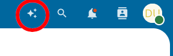
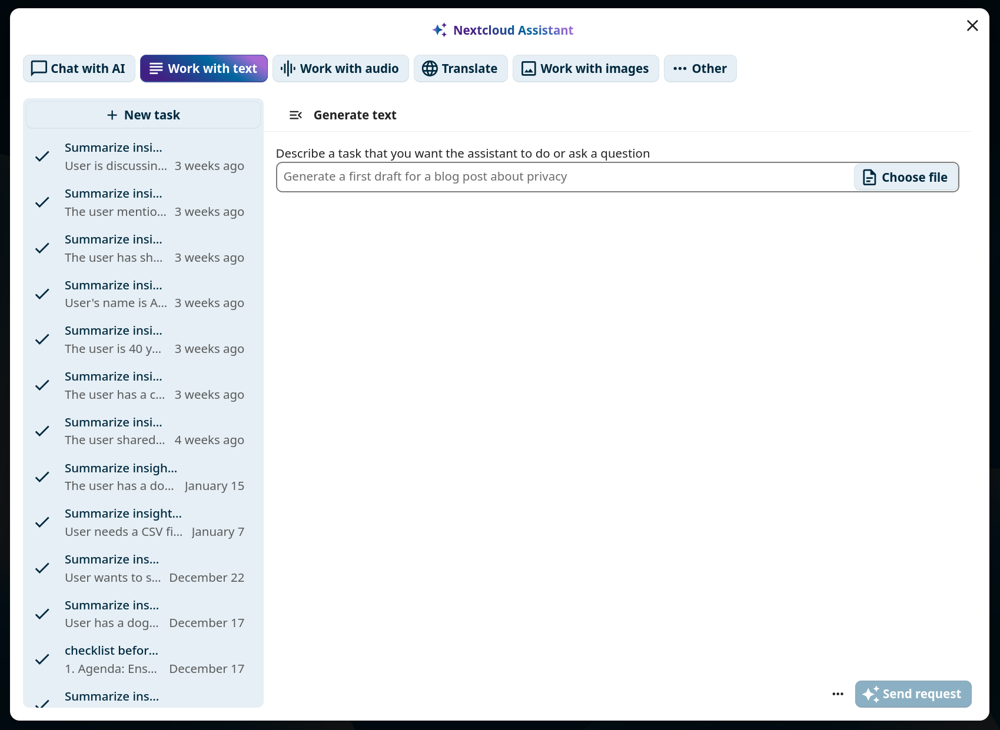
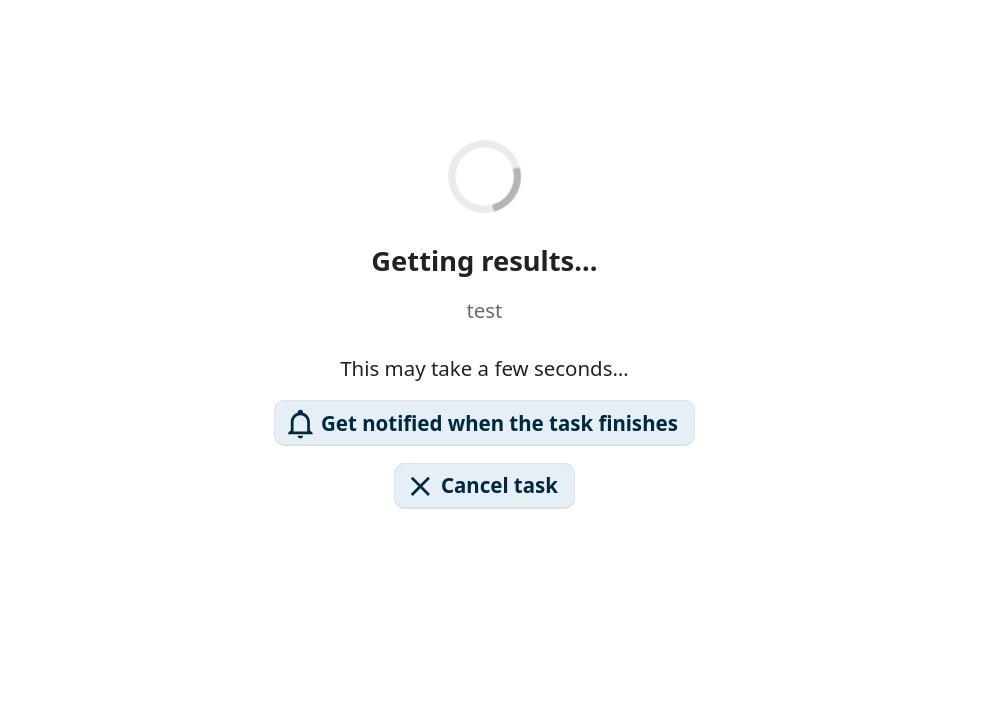
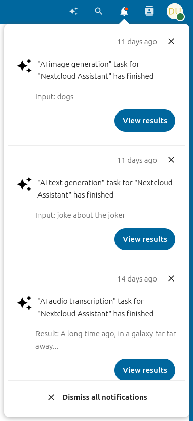
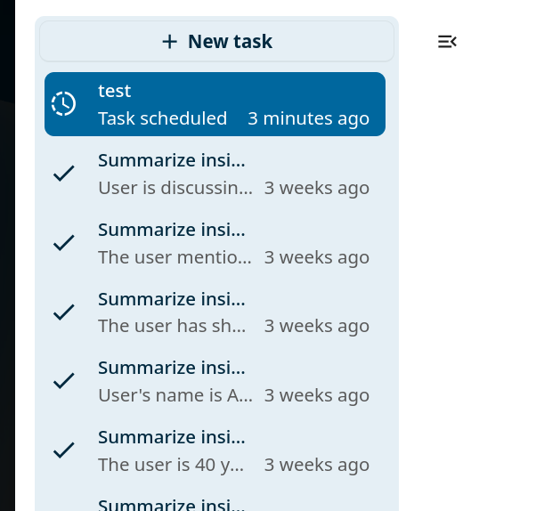
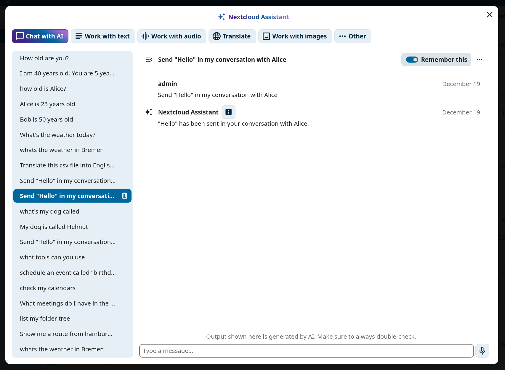
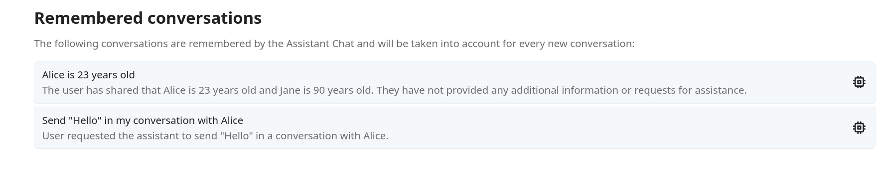
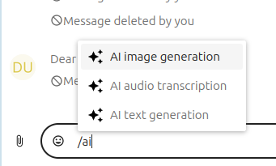
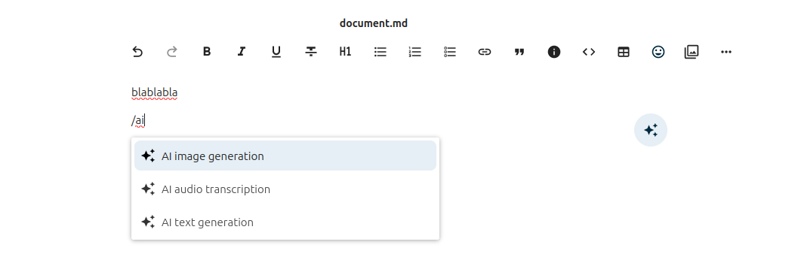

Yapay zeka yardımcısı
Nextcloud yapay zeka yardımcısı, yapay zeka destekli araçlara doğrudan internet arayüzünden erişmenizi sağlar. Yazı özetleme, görsel oluşturma ve konuşmayı yazıya dönüştürme gibi görevleri yapabilir. Bağlı bir dil modeliyle öne arkaya yazışmalar yapabilir ve akıllı seçicileri kullanarak yapay zeka tarafından oluşturulan içeriği belgelere ve iletelere ekleyebilirsiniz.
Not
Yapay zeka yardımcısı için, yöneticiniz tarafından en az bir yapay zeka arka uç uygulaması kurulmalı ve yapılandırılmalıdır. Ayrıntılar için Yapay zeka yardımcısı yönetim belgeleri bölümüne bakabilirsiniz.
Kişisel ayarlar
Yardımcı kişisel ayarları Yapay zeka altındaki Kişisel ayarlar bölümünde bulunur. Oradaki yardımcı üst menü kaydını kullanımdan kaldırabilir, yapay zeka ile ilgili akıllı seçicileri açabilir ya da kapatabilir ve yardımcının çıktısını kaydettiği klasörün adını değiştirebilirsiniz.
Oluşturulan içeriğin kaydedileceği yer
Oluşturulan görseller ve konuşmayı yazıya dönüştürme çıktısı gibi yardımcının sizin için oluşturduğu içerik, Dosyalar uygulamanızda bir klasöre kaydedilir. Yöneticiniz kopya için farklı bir ad seçmediği sürece Assistant olarak adlandırılır.
Yardımcı kişisel ayarlarındaki Veri klasörü altından kendi adınızı seçebilirsiniz. Yöneticinizin belirlediği adı korumak için alanı boş bırakın. Yer belirtici bunun ne olduğunu gösterir.
Not
Adı değiştirmek, var olan klasörü yeniden adlandırmaz veya taşımaz. Bir sonraki sefer bir klasör oluşturulması gerektiğinde geçerli olur. Böylece değişiklikten önce oluşturulan her şey olduğu yerde kalır.
Bir görevi yürütmek
Yardımcıyı açmak için sağ üst gezinme çubuğundaki yardımcı simgesine tıklayın.

Yardımcı panosunun üst bölümünden bir görev türü seçin, giriş formunu doldurun ve sağ alttaki gönder düğmesine tıklayın.

Yapılabiliyorsa göreviniz hemen yürütülür ya da daha sonra yürütülecek şekilde zamanlanır.

Bildirimler
Bir görev zamanlandıysa, tamamlandığında bir bildirim almak için istekte bulunabilirsiniz. Görev çıktısını görüntülemek için bildirimdeki Sonuçları görüntüle düğmesine tıklayın.

Görev geçmişi
Yardımcının sol panosunda, o anda seçilmiş görev türüne süzülmüş bir görev geçmişi listesi görüntülenir. Bu listeden önceki görevleri yeniden başlatabilir, silebilir veya iptal edebilirsiniz.

Yapay zeka ile sohbet
Yardımcıdaki Yapay zeka ile sohbet sekmesi, bağlı yapay zeka ile öne arkaya yazışmanızı sağlar. Alttaki yazı alanına bir ileti yazın ve göndermek için Enter tuşuna basın. Ayrı bir yazışma dizisi başlatmak için Yeni sohbet üzerine tıklayın.

Her yazışmanın kendi bağlamı vardır. Bağlamı gelecekteki bir yazışmada kullanılabilmek ve uzun süreli yapay zeka belleğine eklemek için bir yazışmada Bunu hatırla seçeneğini açın. Yazışmayı bellekten kaldırmak için kapatın.
Kişisel ayarlarınızın Yapay zeka yardımcısı bölümünde, hatırladığınız tüm yazışmaları gözden geçirebilirsiniz.

*Şekil 7: Kişisel ayarlarda listelenen hatırlanan yazışmalar. *
Akıllı seçiciler
Yardımcı uygulaması, Konuş, Yazı düzenleyici ve zengin yazı düzenlemenin kullanılabildiği diğer yerleden erişilebilen üç akıllı seçici sağlar. Süzülmüş sağlayıcı listesini görmek için / ve ardından ai yazın.
Konuş içinde:

Yazı düzenleyici içinde:

Akıllı seçici ile oluşturulan herhangi bir sonuç doğrudan var olan bağlama eklenebilir.
Bağlam aracısı
Yönetici Bağlam aracısı uygulamasını kurduğunda, yapay zeka yardımcısı otomatik olarak Nextcloud uygulamalarınızla etkileşim kurma yeteneği kazanır. Sizin yapmanız gereken ek bir kurulum yoktur. Aracı araçları yukarıda açıklanan aynı Yapay zeka ile sohbet arayüzünde kullanılabilir.
Bağlam aracısı kullanılırken, sohbete doğal dilde yönergeler yazarak yardımcıdan Nextcloud genelinde işlemler yapmasını isteyebilirsiniz. Yardımcı, isteklerinizi yerine getirmek için arka planda “araçları” kullanır.
Not
Kullanılabilecek araçlar, Nextcloud kopyanızda hangi uygulamaların kurulu olduğuna ve yöneticinizin hangi araç gruplarını kullanıma aldığına bağlıdır. Aşağıdaki bazı örnekler için Deste, Konuş veya E-posta gibi belirli uygulamalar gereklidir.
Örnek istemler
Yardımcıdan yapmasını isteyebileceğiniz örnekleri aşağıda görebilirsiniz. Birden fazla yönergeyi tek bir iletide birleştirin. Aracı gerekli araçları otomatik olarak birleştirir.
Yapay zeka araçları
Sohbet bağlamına bir soru sorun (Bağlam sohbeti <https://apps.nextcloud.com/apps/context_chat>`_ gereklidir)
Örnek istem: “Şirketin hastalık izni süreci nedir?”
Bir ortam dosyasını kopyalayın (Yazıya dönüştürme için ses görev türü kullanıma alınmalıdır)
Örnek istem: “Aşağıdaki dosyayı yazıya dönüştürebilir misin? https://mycloud.com/f/9825679” (Akıllı seçici ile seçilebilir.)
Belgeler oluşturun (Nextcloud Office gereklidir)
Örnek istem: “Kedilerle ilgili etkinliğim için bana bir slayt sunumu hazırlayabilir misin?”
Örnek istem: “Bana ülkeler ve nüfus sayıları için bazı yaklaşık sayılar bulunan bir elektronik tablo oluşturabilir misin?”
Örnek istem: “Bana Berlin gezisinde görülecekler ile ilgili bir özet PDF belgesi oluşturabilir misin?”
Görsel oluştur (görsel oluşturma görev türü kullanıma alınmalıdır)
Örnek komut istemi: “Bana bir dizüstü bilgisayarda bir şeyler yazan bir Romalı askerin karikatür görselini oluşturabilir misin?”
Takvim araçları
Kullanıcının takvimlerini listeleyin
Örnek istem: “Takvimlerimi listele”
Kullanıcının takviminde bir etkinlik zamanlayın
Örnek istem: “Yarın öğlen Ali ile bir etkinlik zamanla.”
Kullanıcıların takvimindeki boş zamanları bulun
Örnek istem: “Gelecek hafta ben ve Mert ile bir toplantı yapmak için 1 saatlik boş bir zaman dilimi bul.”
Görev araçları
Bir görev oluşturun
Örnek istem: “Market alışverişi için son tarihi yarın olan bir görev oluştur.”
Görevleri listeleyin
Örnek istem: “Süresi geçmiş görevlerimi listele”
Bir görevi tamamlayın
Örnek istem: “Market alışverişi görevini tamamlanmış olarak işaretle.”
Bir görevin ayrıntılarını güncelleyin
Örnek istem: “Market alışverişi görevini olabilecek en yüksek önceliğe yükselt.”
Örnek istem: “İş raporu görevimin son tarihini gelecek haftanın başı olacak şekilde değiştir.”
Bir görevi silin
Örnek istem: “Görevlerimdeki market alışverişi görevini sil.”
Çevre/Takım araçları
Çevreleri listeleyin
Örnek istem: “Tüm takımlarımı listele.”
Çevre üyelerini listeleyin
Örnek istem: “İçerik pazarlama takımımın tüm üyelerini listele.”
Yeni çevre oluşturun
Örnek istem: “‘Yürüyüş grubu’ adında yeni bir takım oluştur.”
Çevreye üye ekleyin
Örnek istem: “Yürüyüş grubu takımına Ali’yi ekle.”
Çevreden üye kaldırın
Örnek komut istemi: “Ali’yi yürüyüş grubu takımından kaldır.”
Çevre ayrıntılarını değiştirin
Örnek istem: “Yürüyüş grubu takımının adını ‘Açık hava grubu’ olarak değiştir.”
Örnek istem: “Yürüyüş grubu takımına şu açıklamayı ekle: Ayda bir kez birlikte yürüyoruz. Gel bize katıl.”
Bir çevreyi silin
Örnek istem: “Yürüyüş grubu takımını sil.”
Bir çevrede bir dosya paylaşın
Örnek istem: “Yürüyüş planları.md dosyamı Yürüyüş grubu takımıyla paylaş.”
Kişi araçları
Bir kişi bulun
Örnek istem: “Yasemin’in e-posta adresi nedir?”
Bir kullanıcının kimliğini bulun
Örnek istem: “Ali’nin kullanıcı kimliği nedir?”
Geçerli kullanıcının bilgilerini bulun
Örnek istem: “Nerede yaşıyorum?”
Yemek kitabı araçları
Tarifleri listeleyin
Örnek istem: “Tariflerimi listele.”
Tarif arayın
Örnek istem: “Spagetti tarifim var mı?”
Tarif ayrıntılarını alın
Örnek istem: “Bana Spagetti Carbonara tarifimin ayrıntılarını verebilir misin?”
Yeni bir tarif oluşturun
Örnek istem: “Yemek kitabımda Guacamole tarifi oluştur.”
Bir tarifi silin
Örnek istem: “Guacamole tarifini yemek kitabımdan kaldır.”
Tarif kategorilerini listele
Örnek istem: “Yemek kitabımda hangi tarif kategorileri var?”
Deste araçları (deste <https://apps.nextcloud.com/apps/deck>`_ gereklidir)
Deste panolarını listeleyin
Örnek istem: “Erişebildiğim deste panolarını listele.”
Bir deste panosundaki kartları listeleyin
Örnek istem: “Kişisel deste panomdaki kartları listele.”
Yeni bir kart ekleyin
Örnek istem: “Kişisel deste panoma ‘Mutfak lavabosunu onar’ başlıklı bir kart ekleyebilir misin?”
Bir karta etiket ekleyin
Örnek istem: “Kişisel deste panomdaki ‘mutfak lavabosunu onar’ kartına ‘Acil’ etiketini ekleyebilir misin?”
Bir kullanıcıya bir kart atayın
Örnek istem: “Kişisel deste panomdaki ‘Mutfak lavabosunu onar’ kartını Ali’ye atayabilir misin?”
Bir kartı silin
Örnek istem: “Kişisel deste panomdaki ‘Mutfak lavabosunu onar’ kartını sil.”
Bir deste kartındaki yorumları listeleyin
Örnek istem: “Kişisel deste panomdaki ‘Mutfak lavabosunu onar’ kartındaki yorumları göster.”
Bir deste kartına yorum ekleyin
Örnek istem: “Kişisel deste panomdaki ‘Mutfak lavabosunu onar’ kartına ‘Bu Cuma halledeceğim’ yorumunu ekle.”
Bir deste kartındaki bir yorumu düzenleyin
Örnek istem: “‘Mutfak lavabosunu onar’ kartındaki son yorumumu ‘Cumartesi gününe taşındı’ diyecek şekilde güncelle.”
Bir deste kartındaki bir yorumu silin
Örnek istem: “Kişisel deste panomdaki ‘Mutfak lavabosunu onar’ kartıyla ilgili son yorumumu sil.”
Dosyalar araçları
Bir dosyanın içeriğini alın
Örnek istem: “Şu dosyayı belgelerime alabilir misin? Design/Planning.md”
Örnek istem: “Şu dosyayı belgelerime alabilir misin? https://mycloud.com/f/98543234”
Klasör ağacını alın
Örnek istem: “Dosyalarımı listele.”
Bir dosya veya klasör için herkese açık bir bağlantı oluşturun
Örnek istem: “Şu dosya için herkese açık bir bağlantı oluştur: Design/Planning.md”
Yeni bir dosya oluşturun
Örnek istem: “Dosyalarımda yeni bir Ideas.md dosyası oluştur ve kara ormandaki yürüyüş yerleri için fikirlerle doldur.”
Yeni bir klasör oluşturun
Örnek istem: “Dosyalarımda ‘Yürüyüş planları’ yeni klasörünü oluştur.”
Bir dosyayı taşıyın
Örnek istem: “Ideas.md dosyasını Yürüyüş planları klasörüne taşı.”
Bir dosyayı kopyalayın
Örnek istem: “Ideas.md dosyasını Notlar klasörüme kopyala.”
Bir dosyayı silin
Örnek istem: “Ideas.md dosyasını sil.”
Form araçları
Tüm formları listeleyin
Örnek istem: “Erişimim olan tüm formları listele.”
Bir formun ayrıntılarını alın
Örnek istem: “Bana dinlenme kampı kayıt formuyla ilgili tüm ayrıntıları verebilir misin?”
Bir forma soru ekleyin
Örnek istem: “Dinlenme kampı kayıt formuna şu soruyu ekle: ‘Katılınacak gün sayısı’.”
Bir formun tüm yanıtlarını alın
Örnek istem: “Dinlenme kampı kayıt formuna verilen tüm yanıtları listele.”
Form ayarlarını güncelleyin
Örnek istem: “Dinlenme kampı kayıt formunun gelecek haftanın sonunda yayından kalkmasını sağla.”
Bir formu silin
Örnek istem: “Dinlenme kampı kayıt formunu sil.”
Yer imi araçları
Tüm yer imlerini listeleyin
Örnek istem: “Tüm yer imlerimi listele.”
Yer imi ekleyin
Örnek istem: “https://nextcloud.com adresi ile ‘Nextcloud giriş sayfası’ başlıklı bir yer imi ekle.”
Bir yer imini silin
Örnek istem: “https://nextcloud.com yer imini sil.”
Bir yer imini güncelleyin
Örnek istem: “https://nextcloud.com için yer iminin başlığını ‘Nextcloud resmi sitesi’ olarak değiştir.”
Örnek istem: “https://nextcloud.com için yer imine ‘bulut’ etiketini ekle.”
Örnek istem: “https://nextcloud.com için yer iminden ‘bulut’ etiketini kaldır.”
Örnek istem: “https://nextcloud.com için yer işaretini ‘çalışma’ klasörüne koy.”
Yer imi klasörlerini listeleyin
Örnek istem: “Hangi yer imi klasörlerim var?”
Bir yer imi klasörü oluşturun
Örnek istem: “‘İş’ adlı bir yer imi klasörü oluştur.”
Yer imi etiketlerini listeleyin
Örnek istem: “Hangi yer imi etiketlerim var?”
Arama araçları
Nextcloud üzerindeki tüm arama hizmeti sağlayıcıları araç olarak kullanılabilir.
Dosya arayın
Örnek istem: “Dosyalarımdaki pptx ile biten tüm powerpoint sunumu dosyalarını listele.”
Konuş araçları (Talk gereklidir)
Kullanıcının Konuş görüşmelerini listeleyin
Örnek istem: “Konuş konuşmalarımı listele”
Bir Konuş görüşmesindeki iletileri listeleyin
Örnek istem: “Ali ile yaptığım görüşmedeki son iletileri listele”
Bir Konuş görüşmesine ileti gönderin
Örnek istem: “Ali’ye Konuş üzerinden bir fıkra gönderebilir misin?”
Herkese açık bir görüşme oluşturun
Örnek istem: “‘Basın toplantısı’ başlıklı yeni bir herkese açık Konuş görüşmesi oluşturabilir misin?”
Bir Konuş görüşmesindeki belirli bir iletiyi yanıtlayın
Örnek istem: “Ali’nin Konuş görüşmemizdeki son iletisini ‘Anladım, teşekkürler!’ ile yanıtla”
Bir Konuş görüşmesindeki bir iletiye emoji tepkisi ekleyin
Örnek istem: “Ali ile Konuş görüşmemizdeki son mesaja 👍 ile tepki ver”
Bir Konuş görüşmesindeki bir iletiden emoji tepkisini kaldırın
Örnek istem: “Ali’nin son iletisinden 👍 tepkimi kaldır”
Bir Konuş görüşmesindeki bir iletinin tepkilerini listeleyin
Örnek istem: “Konuşma görüşmemizde Ali’nin son iletisine kim tepki verdi?”
Bir Konuş görüşmesinde bir anket oluşturun
Örnek istem: “‘Takım buluşması’ görüşmesinde Pazartesi, Salı, Çarşamba seçenekleri ile ‘Ofis dışı için hangi gün uygun?’ diye soran bir anket oluştur. “
Bir Konuş görüşmesindeki bir anketin sorusunu, seçeneklerini ve güncel sonuçlarını alın
Örnek istem: “‘Takım buluşması’ görüşmesindeki ofis dışı anketinin güncel sonuçlarını göster”
Bir Konuş görüşmesindeki bir ankete oy verin
Örnek istem: “‘Takım buluşması’ görüşmesindeki ofis dışı anketine Salı için oy ver”
Bir Konuş görüşmesindeki bir anketi kapatın
Örnek istem: “‘Takım buluşması’ görüşmesindeki ofis dışı anketini kapat”
Bir Konuş görüşmesinde Nextcloud Dosyalar ögesi paylaşın
Örnek istem: “Ali ile yaptığım görüşmede ‘3. çeyrek planı.pdf’ dosyasını paylaş”
Bir Konuş görüşmesinde paylaşılan belirli türdeki ögeleri (dosya, konum, anket gibi) listeleyin
Örnek istem: “Ali ile yaptığım görüşmede paylaşılan dosyaları listele”
Bir Konuş görüşmesinde paylaşılan tüm türdeki ögelerin özetini alın
Örnek istem: “Ali ile yaptığım görüşmede paylaşılanların genel bir özetini ver”
E-posta araçları (E-posta gereklidir)
Nextcloud E-posta ile bir e-posta gönderin
Örnek istem: “Funda@kurulus.com hesabımdan Ali@kurulus.com adresine bir deneme e-postası gönder”
Bağlı tüm e-posta hesaplarını listeleyin
Örnek istem: “E-posta hesaplarımı listele”
Bir e-posta hesabındaki tüm klasörleri listeleyin
Örnek istem: “Funda@kurulus.com hesabımın klasörlerini listele”
Bir klasördeki e-postaları listeleyin
Örnek istem: “Funda@kurulus.com hesabımın gelen kutusundaki son 5 e-postayı listele”
Çeşitli araçlar
Open Street Maps Nomatim üzerinden bir adresin koordinatlarını alın
Örnek istem: “Berlin, Almanya için koordinatlar nelerdir?”
Open Street Maps ile bir konumun harita adresini alın
Örnek istem: “Bana New York haritasını gösterebilir misin, lütfen”
Bir konumun güncel hava durumunu alın
Örnek istem: “Berlin’de hava nasıl?”
YouTube videolarını arayın
Örnek istem: “Bana Nextcloud hub 10 lansmanının YouTube videosunu göster.”
Duckduckgo ile arayın
Örnek istem: “Bana hızlı makarna tarifleri için arama sonuçlarını göster.”
Toplu taşıma rotalarını belirleyin
Örnek istem: “İstanbul’dan hızlı tren ile Ankara’ya nasıl gidebilirim?”
OpenProject üzerindeki tüm projeleri listeleyin (OpenProject bütünleştirmesi gereklidir)
Örnek istem: “OpenProject üzerindeki tüm projelerimi listele”
OpenProject üzerinde bir projedeki tüm atamaları listeleyin (OpenProject bütünleştirmesi gereklidir)
Örnek istem: “OpenProject üzerinde ‘Ürün lansmanı’ projesinin tüm atananlarını listele”
OpenProject üzerinde belirli bir projede yeni bir iş paketi oluşturun (OpenProject bütünleştirmesi gereklidir) * Örnek istem: “OpenProject üzerindeki ‘Ürün lansmanı’ projesinde ‘Sürüm videosu yayınla’ adlı bir iş paketi oluştur”
Araçları birleştirmek
Bu araçlar, aşağıdaki gibi görevleri yerine getirmek için aracı tarafından da birleştirilebilir:
“Ali’nin yaşadığı yerde hava nasıl?”
Ali’nin adresini aramak için kişileri kullanır ve ardından hava durumuna bakar
“Yaşadığım yerde hava nasıl?”
Geçerli kullanıcının adresini arar ve ardından hava durumuna bakar
“Funda@company.com adresinden Ali’ye bir e-posta gönder”
Ali’nin e-posta adresini aramak için kişileri kullanır ve ardından bir e-posta gönderir
“Dosyalarımdan hangileri Songül’den?”
Songül’ün kullanıcı kimliğine bakar ve ona ait dosyaları arar
“Draft.md dosyamın içeriğini Konuş üzerinden Ali’ye gönder”
Dosyanın içeriğini alır ve Ali ile bire bir Konuş görüşmesine gönderir
Yetenekler
Yetenekler, bağlam aracısına, ilgili olduklarında izleyebileceği yeniden kullanılabilir yönergeleri öğretmenizi sağlar. Yetenek, bir prosedürü, bir dizi kuralı veya alana özgü bilgiyi tanımlayan küçük bir markdown dosyasıdır. Bir yetenek kaydedildikten sonra, aracı onu otomatik olarak alır ve yeniden yapmanız gerekmeden gelecekteki görüşmelerde uygular.
Not
Yetenekler nereye kaydedilir
Kişisel yetenekleriniz, yardımcı veri klasörünün içindeki Context Agent/Skills/ altındaki Nextcloud Dosyaları içinde, yani varsayılan klasör adıyla Assistan/Context Agent/Skills/ içinde bulunur.
Her yetenek, SKILL.md adlı bir dosya içeren bir alt klasördür. SKILL.md dosyası, yeteneğin adını ve açıklamasını tanımlayan bir YAML ön madde bloğuyla başlar, ardından Markdown kodu ile yetenek içeriği gelir:
---
name: weekly-report-format
description: Formatting rules for my weekly status reports
---
When I ask you to write a weekly report, use the following structure:
1. Summary (2-3 sentences)
2. Completed tasks (bullet list)
3. Blockers
4. Plan for next week
Örneğin, “haftalik-rapor-bicimi” adlı bir yetenek Assistant/Context Agent/Skills/haftalik-rapor-bicimi/SKILL.md konumunda bulunur.
Tipik bir yetenekler klasörü yapısı şöyle görünür:
Assistant/
└── Context Agent/
└── Skills/
├── email-tone/
│ └── SKILL.md
├── weekly-report-format/
│ └── SKILL.md
└── meeting-notes/
└── SKILL.md
Bir yetenek oluşturmak
Bir yeteneği iki şekilde oluşturabilirsiniz:
El ile: Dosyalarınızın içinde
Assistant/Context Agent/Skills/altında bir alt klasör oluşturun. Ardından yukarıda gösterilen giriş ve içerikle birSKILL.mddosyası ekleyin.Sohbet ile: Aracınızdan sizin için bir yetenek oluşturmasını isteyin. Örneğin:
“Sana her zaman arkadaş canlısı ve profesyonel bir tonda e-posta yazmanı hatırlatan ‘e-posta tonu’ adında bir yetenek oluştur.”
“İşlem ögeleri ve sahiplerle toplantı notlarını özetleme yeteneğini kaydet.”
Aracı, klasörü ve
SKILL.mddosyasını sizin için otomatik olarak oluşturur.
Yetenekleri listelemek ve kullanmak
Hangi yeteneklerin kullanılabileceğini aracıya sorun:
“Yeteneklerimi listele.”
Bir yeteneği açıkça çağırmanız gerekmez. Aracı, kullanılabilecek tüm yetenek açıklamalarını okur ve görüşmenizin bağlamına göre ilgili olanları uygular.
Yönetici tarafından sağlanan yetenekler
Yöneticiniz, kopyada bulunan tüm kullanıcılara yetenekler sunan genel bir yetenekler klasörü yapılandırabilir. Bu genel yetenekler kişisel yeteneklerinizle birlikte kullanılabilir.
Bir genel yetenek, kişisel yeteneklerinizden biriyle aynı adı taşıyorsa, kişisel yeteneğiniz önceliklidir.
Nextcloud uygulamasını MCP sunucusu olarak kullanmak
Bağlam aracısı uygulaması, Nextcloud kopyanızı bir Model Context Protocol (MCP) sunucusu olarak kullanır. Böylece, Nextcloud kopyanızın Pi Agent, Claude Code, Hermes, OpenCode veya başka bir MCP uyumlu istemci gibi dış yapay zeka araçlarına ve aracılarına bağlanmasını ve Yardımcı sohbetinde bu araçları kullanmasını sağlayabilirsiniz.
MCP sunucusu uç noktası:
https://your-nextcloud-domain.com/index.php/apps/app_api/proxy/context_agent/mcp/
Kimlik doğrulama bir uygulama parolası ile yapılır. “Kişisel ayarlar -> Güvenlik -> Aygıtlar ve oturumlar” bölümünden bir parola oluşturabilirsiniz.
MCP istemcilerini bağlamak
streamable_http aktarımını destekleyen herhangi bir MCP uyumlu istemci, Nextcloud MCP sunucusuna bağlanabilir. İstemciyi yukarıda gösterilen uç nokta adresine yönlendirin ve uygulama parolasını ``Authorization: Bearer `` üst bilgisinde iletin.
Bağlandıktan sonra, dış istemci aynı Bağlam aracısı araçlarını kullanabilir, dosyaları, takvimleri, görevleri, kişileri, Konuş görüşmelerini ve diğer şeyleri doğrudan Nextcloud dışından yönetebilir.